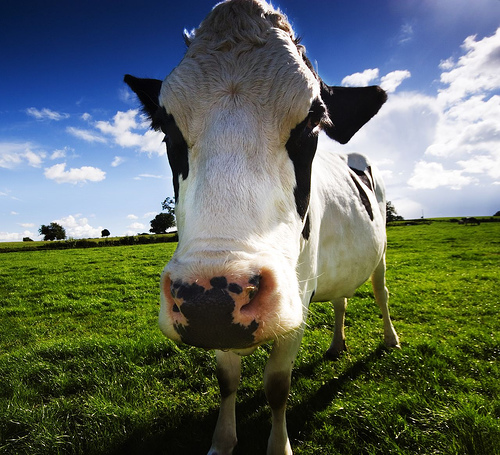

a) original image

b) original image with sobel filter
Sobel filter
c) original image with own filter
Run the above filter on the image
d)o riginal image with laplace edge-detection
e) original image with edge filter
f) original image with edge2 filter